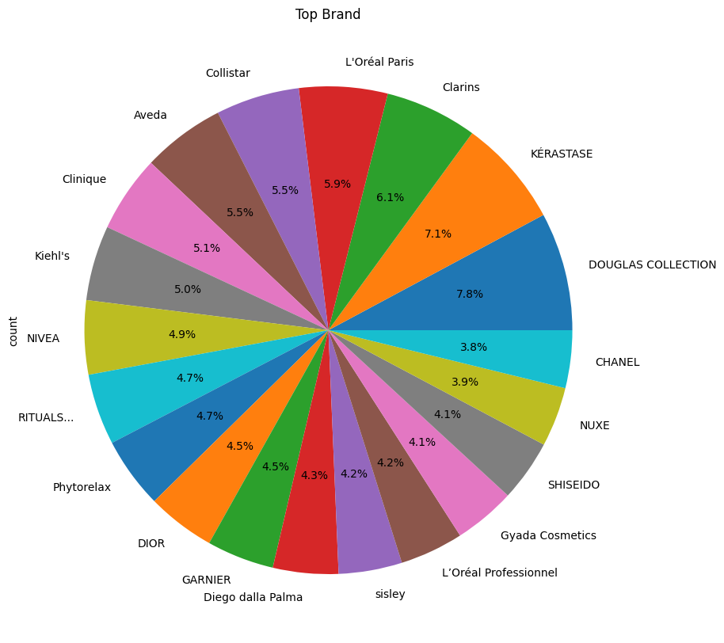
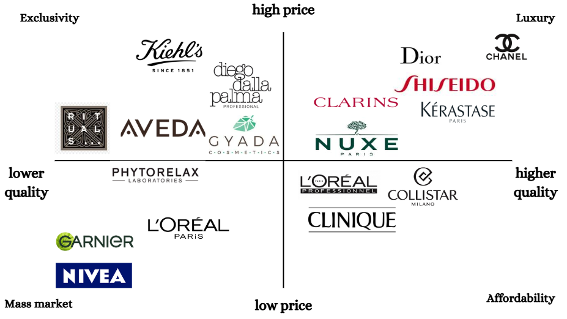
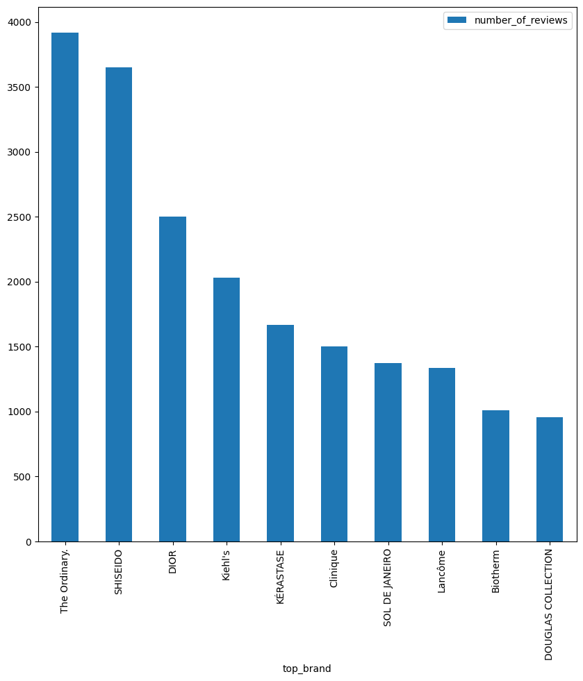

Who are Douglas’s Top Players?
In the fast-paced world of beauty and cosmetics, Douglas.it stands as one of the leading e-commerce platforms: its main strenght? its offering of a vast array of products, from both global giants and niche brands. Also, in the previous article we analyzed how prices are distributed on Douglas, and we found out that there is something for all tastes: from affordable to luxurious, there is a price range that suits everyone.
But it’s not always only about the price, and Douglas knows! That’s why on this platform you can also find cruelty-free products° that, believe it or not, are even more popular than the non-cruelty-free ones. If you didn’t believe me, here you go skeptics you can check it out here.
Prices and Animals aside, Have you ever wondered which brands dominate the platform? I mean, you just open Douglas and you know you’re going to find what’s new and the cornerstones beauty brands…but what’s really trendy at the moment? Now that 2024 is over, we can take stock of the situation and finally answer the question: Which brands dominated the platform in 2024?
But wait, first of all I invite you to read the methodology of this study, it’s important to understand the context of the data we’re analyzing and how we arrived at the conclusions we draw. Then, let’s get started!
How does Douglas’ business model work?
To provide a better context of this analysis, let me briefly explain how Douglas’ business model works. Douglas was born as a brick-and-mortar store back in the early ’90s in Germany: its main focus was soaps and perfumes, but with time and success the business expanded on 2 fronts: Douglas product range widens to other categories such as make-up and cosmetics, and its presence as retailer spreads across all Europe.
At the beginning of the new millennium, Douglas’ expansion into the online market was a natural progression and the company adopts an omnichannel strategy. With its well-established offline presence, Douglas’ penetration of the online-market was a win-win zero-effort situation.
But, I don’t know if you remember, it was around 2015 or so, that some of the giants of the digital space (like Mr. Amazon) started taking over the scene. That’s when Douglas rethinks its strategy and really takes the digital transformation seriously. Douglas’ brilliant minds recognized that the key for remaining competitive relies in the expansion of the product range and in the enhancement of its digital capabilities.
In order to achieve that, Douglas turns its business into a marketplace. This change in the business model, allowed third-party sellers to offer products on Douglas online shop, significantly expanding the assortment from 50,000 to over 100,000 products. The move was part of Douglas’s broader digital transformation strategy and the key to success in the present era, where consumers are so demanding that they want infinite options and they want them fast. Sorry, WE.
Douglas’ strategy in a nutshell
The company’s strategy is based on the following principles:
Organic growth & acquisition: As a retailer, Douglas growth is not only organic but also driven by acquisitions. In Italy, for example, Douglas has acquired Profumeria Limoni La Gardenia, together with its retailer presence and customer base
Cross-border retailing: Douglas crossed its homeland’s borders and expanded its presence in the entire continent, with a glocal orientation. “think global, act local” with moderate adaptations to heterogeneous markets
Retail Branding: Douglas carries unique logo, name and symbols just like a brand. Its Retailer-as-a-brand strategy fostered brand identity, awareness and loyalty. Plus, Douglas operates as an umbrella brand for its retailers, which are always branded as Douglas, exploiting the brand’s image transfer.
Merchandise mix: a wise combination of breadth and depth makes Douglas’ assortment unique. Its merchandise mix is narrow(ish), as for a beauty specialty retailer, and deep with many brands to choose from. Moreover, Douglas proposes its own Store Brand “DOUGLAS COLLECTION”. While one of the main reasons for introducing a store brand is to increase profit margings, it’s also great for differentiation and the best solution for customers loyalty.
Omni-presence: Douglas adopted an omni-channel strategy as an “offline-first”, in fact it started as a brick-and-mortar but now its everywhere: offline (physical stores) and online (e-commerce, social media, mobile apps and online customer service). Do you need me to tell you why this is advantageous?
You probably expect an answer like “Because if the brand is everywhere then it gets into people’s brain, people get bewitched and can’t stop buying blabla…” but the truth is exactly the opposite. It’s advantageous because Douglas customers are totally free! Free to do some comfortable webrooming on the couch…when they’re relaxed and vulnerable the most, and free to do showrooming with their friends…when they’re subject to peer pressure the most. How could you be so evil and conspirative?!
TOP 20 Brands with the largest portfolio on Douglas
So, we said that the merchandise mix is one, or the main, Douglas’ strategy cornerstones and is based on product differentiation. Product range should be a good balance of depht and breadth, so let’s see how Douglas’ portfolio is structured. I remind you that only skin care, hair care and body care are included in the analysis

In the pie chart above, you can see the top 20 brands with the largest portfolio on Douglas. In other words, these are the brands with the largest amount of products on Douglas platform. The percentage of each portfolio is also shown, and you can read the pie chart starting from DOUGLAS COLLECTION and proceeding anti-clockwise for a ranking in descending order.
The largest portfolio belongs to DOUGLAS COLLECTION, with 7.8% of the cake. This is a big big deal, let me tell you why.
To have a store brand it’s one of the emerging retailer functions, called Backward Integration: it’s a strategy that allows the retailer to take over the production function, something that typically doesn’t concearn it, and control the production capacity through a contract manufacturer.
This manouvre is fundamental nowadays, because it creates a competitive advantage (not only for differentiation and customer loyalty) especially on supply chain transparency.
Now more than ever, customers are interested in knowing where the products come from, how they’re made…and I’ll tell you more. If there’s something that consumers seek even more than transparency, it’s the environmental impact of the products.
For a retailer, controlling the manufacturing process gives you a huge advantage also over this issue! Since the retailer is responsible not only for the product formulation but also for the packaging, backward integration opens the door to supply chain sustainability and reverse logistics processes. What does this mean? It means collecting used products (and packaging material), separating them (and in some cases disassembling), recovering the valuable parts (which can be the entire product, or components or material) and eventually reusing them through recycling or remanufacturing.
Implementing this strategy called Closed Loop Supply Chain (a circular economy solution) is a great way to make people happy, reduce waste helping the environment, and even save money. And guess what? Douglas is not doing it. Why? Because they didn’t hire me yet.
Douglas’ brands market positioning
Now, let’s see how Douglas’ top 20 brands are positioned on the market. The following figure is a market positioning framework: while it’s supposed to reflect the brand’s intended positioning, the influence of my own perception of the brands inevitablly applies; and that’s why this framework would probably be slightly different for everyone.
This is not just a disclaimer, it’s exactly the game we’re all playing here. Brands try very hard to shape their identity trough mission, vision, values, USP, pricing… and then put so much effort into communicating it consistently and clearly to the customers trough a certain visual identity, storytelling, slogans…but then, stuff starts getting out of their control when all their messages are to be interpreted by the consumers. That’s the point of no return and the reason why different people may place the same brand in different positions in the framework.

DOUGLAS COLLECTION popularity performance analysis
Previously, we talked about DOUGLAS COLLECTION store brand and how important it is from the company’s point of view to preserve it at all costs. So, let’s see now how good or bad DOUGLAS COLLECTION is doing in terms of popularity among consumers.
We’ll get an idea of DOUGLAS COLLECTION performance by comparing it with all the other brands in the product catalogue on a popularity scale. In order to do so, we’ll use the famous Douglas dataset containing price, reviews count, presence of a cruelty-free claim and obviously 514 brands endorsed by Douglas to do a linear regression analysis as follows:
\[𝑃𝑜𝑝𝑢𝑙𝑎𝑟𝑖𝑡𝑦 = 𝛼 + 𝛽1𝐶𝑙𝑎𝑖𝑚 + 𝛽2𝑃𝑟𝑖𝑐𝑒 + 𝛽3𝐵𝑟𝑎𝑛𝑑\]
where Popularity is the number of reviews per product, Claim is a dummy variable (0-1) that represents the presence or absence of a cruelty-free claim, Price is product’s price, and Brand is a one-hot encoded dummy variable that represents the top brand of the product.
While creating dummies for brands, I dropped DOUGLAS COLLECTION brand to make it our reference brand. In this way, the coefficients of the brand dummies will reflect the difference in number of reviews between DOUGLAS COLLECTION and the other brands I display only the significant results, in the table below:
| Brand | coeff. |
|---|---|
| Astra Makeup | 39.2*** |
| Aveda | -7.7** |
| Biotherm | 8.9* |
| CHANEL | -8.9* |
| CeraVe | 44*** |
| DIOR | 22.2*** |
| IT COSMETICS | 18** |
| Kiehl’s | 14.8*** |
| Lancôme | 16.9*** |
| MÁDARA | -10.4** |
| OLAPLEX | 17.9** |
| Organic Shop | 13.4** |
| SHISEIDO | 44*** |
| SOL DE JANEIRO | 35.7*** |
| The Ordinary. | 81.3*** |
| essence | 22** |
***p<0.01, **p<0.05, *p<0.1
The coefficients next to each Brand indicate their performance compared to DOUGLAS COLLECTION. For example, Astra Makeup has 39 more reviews than Douglas COLLECTION for products at the same price point. The results tell us that DOUGLAS COLLECTION overperforms, in terms of Popularity, only Aveda, CHANEL and MÁDARA. This Brands have respectively 7.7 , 8.9 and 10.4 average reviews less than DC. DOUGLAS COLLECTION being more popular than CHANEL is natural, but being more popular than Aveda and MÁDARA is a good result.
Some Brands, instead, are drastically more popular than DC. Here they are from the most popular to the least, compared to DC on the same price point: The Ordinary. (+81), CeraVe (+44), SHISEIDO (+44), Astra Makeup (+39), SOL DE JANEIRO (+35), DIOR (+22), essence (+22), IT COSMETICS (+18), OLAPLEX (+17), Lancôme (+16), Kiehl’s (+14), Organic Shop (+13), Biotherm (+8).
2024 Highlights: TOP 10 Brands on Douglas
Now let’s shift the spotlight to the Brands that have made Douglas Great in 2024. These are the names that dominated the platform, as ranked by the volume of customer reviews, and were also Douglas’ customers favorites.

The greatest protagonist of 2024, who could it be if not The Ordinary? The Canadian brand is certainly an highlight of 2024, as it has revolutionized the industry with its western-approach to skin-care. Unrivaled products, scientific approach, strong brand identity, affordable and effective. Really deserves to be the top brand of the year.
The second brand that dominated the platform in 2024 is SHISEIDO. The Japanise brand has always had a certain reputation for its elegance, sophistication and relyability. But I can’t help but notice that this is all about the skincare again. The asian approach to skin-care has conquered the masses in 2024 and, on Douglas, it is represented by SHISEIDO.
Third-place for Dior, which surprise me a little bit. This high-end, glamorous beauty is definitely a luxury brand…and I didn’t expect it to be in the Top 3 for Popularity. I am sure it owes its high ranked position to some of its viral products like The Lip Glow Oil, which became a must-have for every beauty lover in 2024.
Kiehl’s 4th place is emblematic for Douglas. The sofisticated brand is a perfect icon for Douglas positioning on the market. Trusted, scientific, and exclusive, I would define it as a Douglas signature brand. 5th and 6th place are Kérastase and Clinique, which are both well-known brands in the beauty industry and have been around for a long time. The first one is certainty for hair-care, matching elegance with affordability. The second one I believe, again, had a comeback due to skincare. Lancôme at 8th position is as surprising as Dior in the top 3. Maybe I should review my article about Douglas prices and praise affordability a bit less…looks like Douglas customers are not so much into it. Biotherm, 9th position, is again a manifest of Douglas successfull positioning on the exclusivity and sophistication side of the market. I get it. Finally, 10th place is DOUGLAS COLLECTION: Congratulations! It’s an honour to be in the top 10 as a private label! Your great value for money doesn’t compromise on quality and customers see it as a reliable choice.
Conclusion
Douglas Collection, can we call it a win?
In this article we have seen how Douglas’s business model works, what is its strategy and how it is structured but we also got some insights about 2024 trends in the beauty industry. We’ve seen how Douglas’ portfolio is structured and that DOUGLAS COLLECTION, even though it’s a private label, is the brand with the largest portfolio on the platform. It’s a strong choice to put your own store brand at the center of your portfolio, especially if your positioning on the market as a retailer is between luxury and exclusivity. For this reason I believe putting your private label next to big names, such as the ones we have seen, is a choice that takes some courage: the risk is that your customers are going to associate your private label as the “cheap choice” and this, unless it’s your goal, could be a mistake. Anyway, in the end we have seen that DOUGLAS COLLECTION is doing quite good compared to the other brands, so good that it’s in the TOP 10 most popular brands on the platform. So Yes, for Douglas Collection to be where it is, I would call it a win
2024 Highlights: trends & insights
From the TOP 10 Popular Brands list, we get insights about 2 things: Douglas’ customers brand preferences and 2024 beauty trends.
About the first one, It’s clear to me what Douglas customers are seeking for: premium-luxury brands with a well-established reputation and sophisticated niche brands, with science-backed up formulations and elegant packaging or with a focus on sustainability, natural organic beauty. We can see all of this from the Market positioning framework, together with Douglas’ effort in offering a range of products for all pockets.
About 2024 trends, it’s quite clear that all revolved around the skin-care category and its main players. The Ordinary and Shiseido in particular represent the big battle between western skin care and asian skin care. Sol de Janeiro also bounced back in the game with its scented sprays and creams; and while some of the main players in the beauty industry are still there, we can also observe niche brands emerging from the market, conquering the mainstream with their unique selling propositions focused on sustainability and natural organic beauty